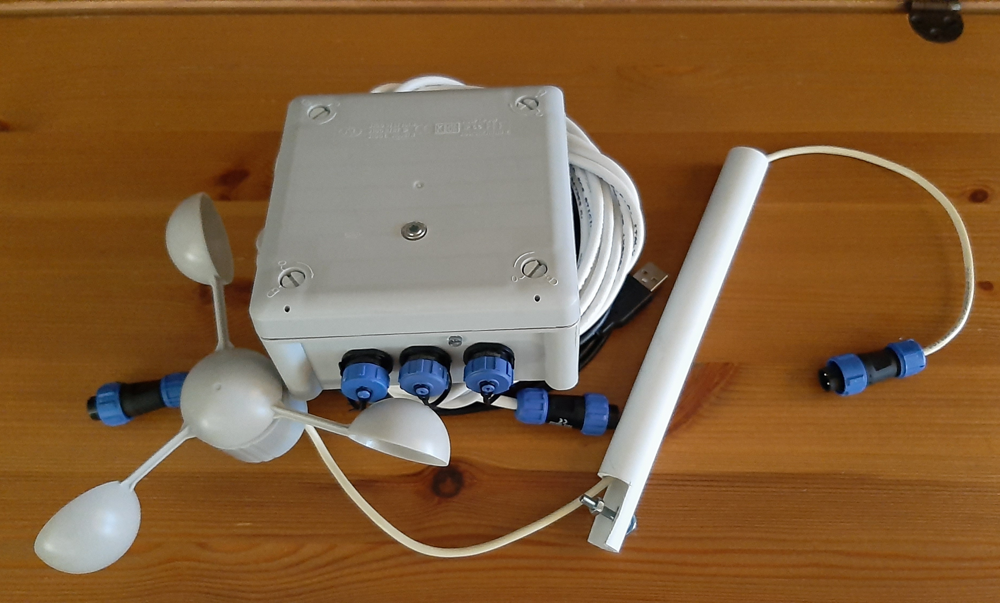
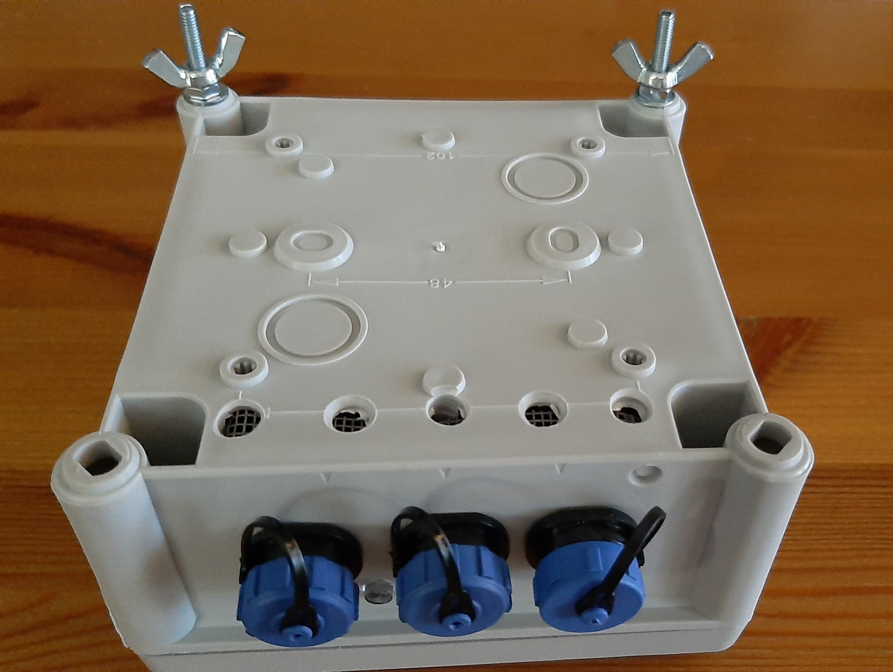
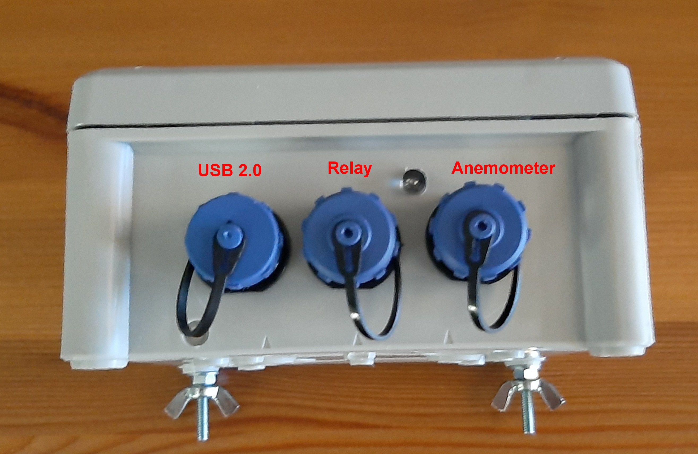
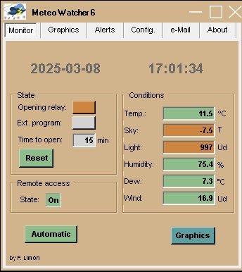
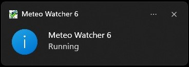
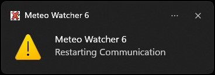
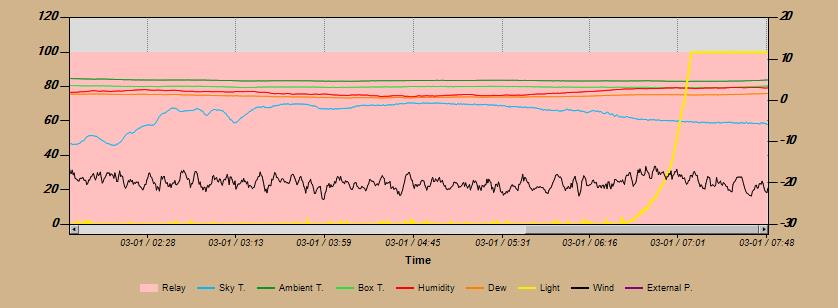
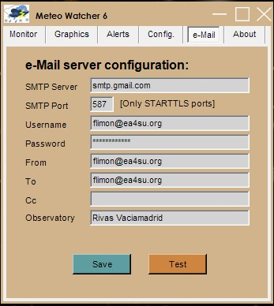
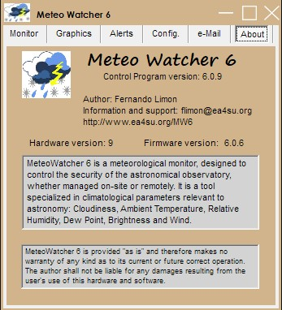

Meteo Watcher 6

|
Meteo Watcher 6 |
|
|
| Meteo Watcher 6
is a weather condition monitor/analyzer essential for the operation of
astronomical observatories. It has been designed to control observatory security, whether managed on-site or remotely. The implementation of the Internet of Things (IoT) is facilitating the use of new sensors, more accurate, with higher performance, lower power consumption and greater durability. This new version of Meteo Watcher makes use of new sensors, which allow it to improve the accuracy and reliability of some of the monitored parameters. Relevant meteorological parameters from the point of view of safety in an astronomical observatory: Cloudiness, Ambient Temperature, Relative Humidity, Dew Point, Brightness and Wind.
The elimination of the rain sensor and the heater has made it possible to drastically reduce consumption, making it possible for the device to be powered directly through the USB port, without the need for any external power supply. Meteo Watcher 6 remains the only device of its kind with the ability to operate autonomously, ensuring the safety of the observatory without having to rely on any computer, embedded system or additional controller. It analyzes the meteorological parameters according to the configuration set for it and decides, on its own, whether the conditions are safe enough for the observatory to remain open. All the changes described above make this
new version much simpler to configure, implying a much shorter learning
curve in the use of the device. Meteo Watcher 6 should not be assimilated or used as a weather station. It is not intended or designed for that purpose.
|
| Previus versions | ||||||
|
 |
||||
|  |  | |||
|  | ||||
|
Its design has sought practicality and operability, providing information in real time in a graphical way or processable later by means of a CSV file. It has an output (pair of wires) that allows it to act autonomously on other devices and/or sensors, such as the Talon6 or equivalent. Communications between the Meteo Watcher and the observatory's computer are done through the Control Program via USB 2.0 connection (supplied with a 5 m cable). Power is supplied through the USB connection itself. Meteo Watcher can operate and manage the security of the observatory without the need of a computer. Once configured, it works autonomously, analyzing the environmental measurements and deciding whether or not to keep the observatory open based on the established configuration. From the moment it is turned on, it starts analyzing parameters and making decisions. The Control Program allows the user to monitor in real time the meteorological values and configure the behavior of the device. The telemetry provided in the main Control Program window and in the Information Exchange Log with other programs is updated every 30 seconds. Meteo Watcher is a device for measuring environmental parameters, which, far from being absolute, are dependent on the place of installation and time of year, so it will be necessary to make adjustments to the configuration parameters to adapt it to the weather conditions of each season. In any case, Meteo Watcher is not a weather station and should not be used as such. Meteo Watcher 6 has a humidity and ambient temperature sensor, which allows you to know the dew temperature (dew point). This allows you to set up alerts to shut down the observatory if a limiting relative humidity is reached or if the dew temperature gets too close to the ambient temperature. Sometimes we are very careful about the dew on the lenses, but we forget that it can also be very harmful to the electronics surrounding the telescope (mount, computers, cameras, focusers, etc). And even, that due to the ice it is impossible to close the observatory. In the Meteo Watcher 6 we have chosen to replace the classic observatory opening/closing signal relay with a solid state device, which is more durable and provides significantly lower power consumption. In any case, it should not be used as a switch to operate motors or other types of devices. The Control Program is compiled in .NET 4.7.2, so it is compatible with Windows 8.1, 10 and 11. At the same time, it has been programmed so that the interpretation of the decimal separator, either comma or point, is not a problem and adapts to the regional configuration of the system where it is executed. The USB 2.0 interface uses the CH341 chipset. The latest versions of Windows recognize it without any problem, but if you need it, here is the driver to download and install it. It is possible to update the processor
firmware from the computer where the Control Program is running. To do this
you will use the XLoader program. Just unzip and
run it:
It will be necessary to indicate that it is an Arduino Nano(ATmega328) (as shown in the image) and select the port assigned by Windows. The communication speed is set by the program. Select the file with the latest version of the firmware to be installed and click Upload. While reprogramming, do not interrupt communications or turn off the Meteo Watcher. It is possible that the update process may involve a deletion of the existing configuration, so it is advisable to verify the configuration after applying a firmware update. |
| Meteo Watcher
incorporates a very sensitive pulse-based anemometer (reed
relay).
It is a model that has proven to be very reliable over the years and is used in numerous weather stations. The anemometer is connected to the Meteo Watcher through a waterproof connector, as shown in the picture. |
| ASCOM support for Meteo Watcher 6
|
|
Meteo Watcher provides a means of interfacing with other programs through the MeteoWatcher6.dat file, compatible with Boltwood/Clarity II Remote mode, which allows it to interface with most observatory automation software, such as CCD Commander or CCD Auto Pilot, as it is compatible with ASCOM Boltwood Safety Monitor. It is also compatible with ASCOM Generic File SafetyMonitor Driver by creating the MeteoWatcher6.safe file in the MeteoWatcher6 folder in Windows user Documents. In such a way that if the conditions are safe to open the observatory, this file is created. It is deleted as soon as they are no longer safe. Meteo Watcher 6 also has its own ASCOM driver, the Meteo Watcher SafetyMonitor, but in this case the Meteo Watcher is accessed via Ethernet over HTTP protocol. This driver allows to know if the weather conditions are safe to open the observatory, according to the parameters that have been configured from the Control Program. To do this, it is necessary to activate Remote Access and configure the driver to access the computer and port where it is running. This solution allows several observatories to install the ASCOM driver and use a single Meteo Watcher 6. This driver has passed the ASCOM validation tests. |
| Accessing Meteo
Watcher 6 from N.I.N.A.
|
|
In NINA, Meteo Watcher 6 can be configured as a Safety Monitor using the ASCOM driver, which will allow to know from NINA if the weather conditions are safe to open the observatory.
Also, simultaneously, we can configure NINA to access the meteorological data handled by Meteo Watcher 6 through the data file MeteoWatcher6.dat, viewing it as a Boltwood/Clarity II Remote:
In this way we will be able to have the following panels in the NINA console:
|
| Security measures
provided by Meteo Watcher 6
|
Since the device operates autonomously, without the need to be connected to a computer, it does not require any measures to verify the presence of second devices. If it is desired to ensure power supply through the USB port independently from the computer, it should be connected to a self-powered USB Hub. As soon as power is supplied to the Meteo Watcher 6 and if it is configured in Automatic Mode, it will start to measure the meteorological parameters and make decisions about the security of our observatory. |
| Installation and
maintenance of Meteo Watcher 6
|
Download and unzip the file containing the latest version of the Control Program (see Software and Firmware Update section of this page). Create the folder where you want to install the program. It is advisable that this folder is named MeteoWatcher6 and is created in the system folder Program Files. In the user's Documents folder, the MeteoWatcher6 folder will be created automatically, where all files related to the application will reside: configuration, logs, etc. The first time you run the Control Program (MeteoWatcher6.exe) the MeteoWatcher6.ini file will be automatically created with a standard configuration that you can later modify with the program itself from the Alerts and Configuration tabs. You will only be asked to indicate the serial port to connect to. The Meteo Watcher device should be
installed in a clear location in the observatory, being very important that
it has a slight inclination to avoid water retention in the upper part of it,
and the ventilation holes, which should never be obstructed,
should be located in the lowest part, as can be seen in the following photo:
In some computers, despite the manufacturer's assurances that their USB ports comply with 2.0 specifications, this is not always true and they provide significantly lower 5V output voltages, which in practice means a reduction in the maximum length of the USB cable that they can support and therefore have difficulties in using 5 meter USB cables, such as the one included in the Meteo Watcher. This often results in intermittent loss of communications or even in the inability to establish communications at all. Sometimes it is possible to solve this problem by trying one of the other ports (preferably those located on the back of the computer). Although the most recommendable solution is to incorporate a powered USB HUB, of quality and that guarantees us to fulfill the specifications USB 2.0. It is also possible to use USB Extenders via RJ45 through UTP cable. Meteo Watcher, as any device installed outdoors, suffers from weather and environmental conditions, so it should be subject to care and maintenance. The cloud sensor may have a build-up of dirt, so it is advisable to clean it carefully and gently with soapy water and a cotton swab. Lack of cleaning may cause erroneous readings on this sensor. |
| Information provided
by the Meteo Watcher 6 control
program 
|
| When the program is
initialized, the main window is displayed.
Note that the telemetry and configuration data reside in the Meteo Watcher device, so every time telemetry or configuration parameters are requested, the program must request them from the Meteo Watcher in order to display them. This operation, depending on the circumstances, may take a few seconds. If everything is correct and once the communication with the Meteo Watcher has been established, the telemetry data will be displayed. In the case that the execution has been established in minimized mode, the Control Program is minimized and the Meteo Watcher 6 icon will appear in the System Tray with the green check mark and a notification like the following one:  At any time, by double clicking with the left mouse button on the icon, the application will run in normal mode again and you will be able to see the values of all the sensors and weather conditions that Meteo Watcher monitors. In the event that the Control Program
detects problems in communications, a message similar to the previous one
will appear indicating Restarting
Communication, and the icon in the
task bar (System Tray) will be marked red.  If finally it is not possible to re-establish the communication, the following message will be displayed and the Control Program will be closed:
Returning to the normal size window, the date and time when the last data update was performed is shown in the upper left zone. The upper left zone shows the Opening relay status, which indicates whether the environmental conditions are suitable to operate the observatory (green button) and therefore the relay will be inactive, or if on the contrary the conditions for safe operation are not met (red button) and the relay in this case will be active. If the relay has been inhibited, the button will be grayed out. In addition to the relay, as long as we have the control program running, it is possible to configure Meteo Watcher to run an External program (*.bat, *.exe or *.vbs) in case the environmental conditions are not suitable. As with the Opening Relay, the button will be green if the conditions are suitable and the program has not been executed or the Time to open time period has expired, red in case of an incident and therefore the program has been executed, or gray if this option is not active in the Alerts tab. In case of an alert, the external program will be executed first, and once completed, the closing relay will be activated. This allows, for example, to run a VBS script (POTH_Park_Telescope.vbs) that connects to the telescope through POTH or ASCOM Device Hub to give the order to park the telescope, and then by means of the relay, initiate the closing of the observatory. The Time to open field indicates the remaining minutes for all activated safety mechanisms to indicate that the observatory can be opened: relay, Observatory Close fields or Alert from the MeteoWatcher6.dat file. This countdown starts at the moment when all alarms are deactivated.
The Reset button allows you to tell Meteo Watcher to reset the
Time to open to zero at the next cycle, conditions permitting. When the button
is pressed, it turns red. Once the request has been evaluated, it turns
green again. It is useful if the opening of the observatory is inhibited (Opening
relay in red) and we modify any value in the configuration or in the alerts. In the right area, which corresponds to the values provided by some of the sensors, we have: Temp.: Ambient temperature. Sky: Sky temperature measured by the cloud sensor. The clearer the sky the lower the measured temperature. We will use this value for configuration settings. Light: It represents an indication of the brightness being measured by the light sensor.. Humidity: Relative humidity. Dew: Temperature at which water vapor in the air begins to condense. Wind: Wind speed. A reading is taken every 30" and the average value of the last three measurements is displayed.
In the lower left zone we have the Graphics button, which will allow us to visualize with total comfort the evolution of all the variables monitored by Meteo Watcher over the last 48 hours. Clicking it will open a new window like this one:  If the window remains open, it will be automatically refreshed every 5 minutes. If the Graphics button is clicked while the window is open, the graphs will be refreshed at that time. When the graph window is opened, or when it is automatically refreshed every five minutes, the MeteoWatcher6.jpg file is automatically created/updated with a copy of the graph. This will allow us to embed it in a Web page or other type of viewer. The values of Humidity, Clarity and External P. are displayed on the left Y-axis scale. The values for Sky T., Ambient T., Box T., Dew and Wind use the right Y-axis. When the Opening relay is armed, indicating that the observatory should not be opened, the graph is displayed on a pale red background, covering the 0 to 100 range of the left Y scale. Otherwise, the background is white. The data displayed are the same as those stored in CSV format, so for more in-depth and detailed studies I recommend using a spreadsheet directly. |
| Meteo
Watcher 6 graphs
As previously indicated, Meteo Watcher 6 can display graphically all the parameters it monitors. In the Graphics window we can select which parameters we want to be displayed graphically, as well as how many days the graph should be able to cover and how many hours of monitoring should be shown on the graph. |
| Meteo Watcher 6 alerts
|
|||||||||||||||||||||||||||||||||||||||||||||
| Remember that the
configuration parameters are stored in Meteo Watcher 6, so each time
configuration parameters are requested, the program must request them to
Meteo Watcher 6 in order to display them. This operation, depending on the
circumstances, may take a few seconds. In the Alerts window you will define which parameters you want to control in order to operate with the observatory. Sky
Light
Humidity
Dew
Wind
Time to open
Run external program
Enable use of opening relay
Send mail if opening relay is triggered
Check software update
Once the alert parameters have been set, click on the Save button to save the settings in Meteo Watcher 6. |
| Meteo Watcher 6
configuration
|
|||||||||||||||||||||
| Remember that the
configuration is stored in the Meteo Watcher device, so every time the
configuration parameters are requested from the control program, they must
be requested from the device in order to be displayed. This operation,
depending on the circumstances, can take up to six seconds. In the Configuration window is where the values of the parameters that will set the operation of the Meteo Watcher are defined. COM:
Indicate in this field the serial port assigned for communications with it. Diferential Dew: We will set the minimum allowable differential in degrees
Celsius between the ambient temperature and the dew point. Below this
differential it is understood that there is excessive danger of condensation.
If this threshold is exceeded, it will be indicated in the W and r fields of
the MeteoWatcher6.dat file (described later) as high humidity. Brightness: The value of this parameter can vary between 0 (totally dark) and
1023 (maximum brightness) and represents the value below which it is
understood that a reasonable level of darkness has been reached. Photometer calibration: This parameter allows to calibrate the sensitivity of the light meter, making it possible to have zero measurements in dark conditions. It is a value that will always be subtracted from the reading provided by the brightness detector. Anemometer calibration: To perform a reasonable characterization of the anemometer we need to know and specify these parameters.
Remote access: Meteo Watcher provides the facility to activate, through the control program, an HTTP server that provides a string in standard Json format that includes all the telemetry data. To do so, you only need to activate this functionality and indicate the port through which this service will be offered. To interact with programs running on the same computer, such as the ASCOM driver, it is sufficient to set the Local mode and the user will have standard privileges. If you want to access remotely from other computers on the local network or from the Internet, you must select Public mode and run the Control Program with Administrator Privileges. If you are behind a NAT router, it will be necessary to configure the corresponding port forwarding. Since a standard format is used, this service can be accessed through any browser. In the case of Firefox, it has a Json viewer, so the presentation will be more pleasing to the eye.
A proprietary client (MeteoWatcher6-Client.exe) is also available that provides a view of the parameters being provided from the Json server. A link for download is provided in the Software and Firmware Update area.
If what you prefer is to be able to access through mobile device Apps, you can use Json Genie. But if you are looking for a Dashboard, I recommend Dashboard (of JSON Requests), available for both iOS and Android. With this App you can configure your queries and have an interface like this:
In the options block we have those that allow defining the operating mode of the Control Program: Start with Windows: The Meteo Watcher 6 control program is instructed to perform the necessary configuration in the system so that it will start automatically when the operating system is started. Run minimized: The Meteo Watcher 6 control program is instructed to run in minimized mode, showing only the icon in the task bar (System Tray). In this way, once the connection with the device is established, the program automatically switches to run in minimized mode. Generates trace: The Meteo Watcher 6 control program is instructed to generate the MeteoWatcherV.log file, in the same directory where it is installed, in which it will store all the information related to the operations it performs. Normally it will be deactivated.
Once the configuration parameters have been set, press the Save button to store the configuration in Meteo Watcher 6. If you press Reset, the default configuration will be loaded. Make the modifications that you consider and finally press Save to save the configuration in Meteo Watcher 6. |
| eMail configuration 
|
|
In the Alerts window it is possible to configure the Meteo Watcher Control Program to send an e-mail every time the observatory closing relay is activated.
By clicking on the Test button we can verify that everything is well configured, and we should receive a test e-mail. If you are a GMail user and if, having verified all the identification parameters, when sending the test email you get the following error message:
is due to Google's security restrictions
to allow third party applications access to your email. |
| Meteo
Watcher 6 about 
|
|
In this window we can consult, in addition to the conditions of use, the version of the Control Program we are using, the version of the hardware (PCB) and the Meteo Watcher 6 device software (firmware). |
| Specification of MeteoWatcher6.dat
file
|
||||||||||||||||||||||||||||||||||||||||||||||||||||||||||||||||||
| This is the file used to
exchange information with other programs. It follows the format defined by Cyanogen for the Cloud Sensor II in claritymanual.pdf (Chap. 17). The point being the decimal separator, regardless of the locale. 2023-02-11 09:22:48.00 C K -3.1 0.3 -2.5 4.2 81 -2.6 0 0 0 00030 044968.39083 3 1 0 3 1 1
|
| Specification of MeteoWatcher6.csv
file
|
||||||||||||||||||||||||
| It is a file in CSV format
and can be imported directly from Excel. The description of the fields,
separated by ";", is as follows: 2023-02-11;09:22:48;-3.08;0.26;-2.49;80.9;-2.62;996;4.2;1;0
|
| Software y firmware
update
|
|
| Control program | 6.0.7 - MeteoWatcher6-v6.0.7.zip [Firmware 6.0.5 HW R9 required] |
| Remote Client | 6.0.4 - MeteoWatcher6-Client-v6.0.4.zip [Control Program 6.0.6 required or higher] |
| Firmware | 6.0.5 - FW-MW6-v6.0.5-HWR9.zip [Required for Control Program 6.0.6 or higher] |
| Contact
|
Meteo Watcher 6 is not a commercial product and is therefore provided without warranty of any kind. It is not sealed nor does it incorporate mechanisms that prevent the owner from tampering with it. I designed it for use, and I use it, in my observatory. The software development alone has taken hundreds of hours of work. I am still working on its evolution, this being the sixth generation. If you need any clarification, suggestion or if you are interested in a Meteo Watcher 6, you can contact me at: or you can sign up in the Google group meteowatcher : https://groups.google.com/forum/#!forum/meteowatcher
|